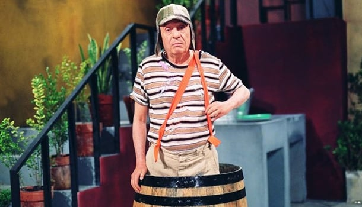

Chaves (Roberto Gómez Bolaños)
Chaves é um garoto órfão que mora na casa número 8 do cortiço. Não, ele não morava dentro do barril: aquele era seu esconderijo! Ele deixa claro que é impossível para uma pessoa morar dentro de um barril!
Todos os dias, entre uma brincadeira em outra, ele tenta fazer o seu melhor para arranjar o que comer e sobreviver. Seu nome verdadeiro, sua origem e até mesmo quem cuida dele são um mistério nunca revelado pela série.
Apesar de todas as suas dificuldades, Chaves é um menino esforçado que conta com o apoio de todos da sua tão querida vizinhança para ir tocando a vida. Entre uma trapalhada e uma briga, no fundo todos ali são como uma grande família.